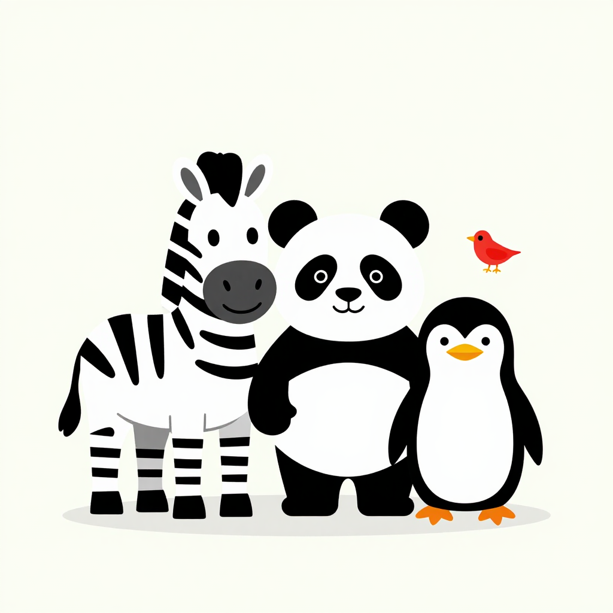

The Black and White Zoo
For brand-new eyes
Nine bold animals in pure black and white, then nine bright colours in the order a baby learns to see them — red first, blue last. A little red bird hides on every page.
2 chapters22 pages80 clips
Open the book →